Проектирование конструкций плечевых изделий женской одежды
#Конструирование, моделирование и технология изготовления изделий легкой промышленности
Динамическая инфографика
Создание объёмной формы в женской одежде
Формы современной женской одежды сложны и многообразны.
Формообразование кроеной одежды — это процесс создания объемных форм, основанный на способности ее материалов под действием деформаций изгиба, растяжения и смятия создавать пространственную форму.
Существует несколько способов создания объёмной формы в женской одежде:
- Образование новой вытачки в различном направлении.
- Образование несколько вытачек вместо одной.
- Образование новых вытачек по ломанной или кривой линии.
- Замена вытачек складками или драпировками.
- Перенос вытачек в подрезы, кокетки, рельефы, драпировки или швы.
- Формообразование с использованием пластических свойств волокон при проведении ВТО.
Варианты перевода и оформления вытачки на выпуклость груди и лопаток
Вытачки являются наиболее распространенной разновидностью конструктивных средств создания объемной формы изделия. В женских изделиях они могут выходить из различных срезов деталей (пройма, боковой, средний, плечевой, горловины и т.д.). Вытачки могут иметь простую или сложную конфигурацию.
Преобразование вытачек может выполнятся на различных деталях одежды (спинке, переде, рукавах). Вытачки являются наиболее распространенной разновидностью конструктивных средств создания объемной формы изделия. В женских изделиях они могут выходить из различных срезов деталей (пройма, боковой, средний, плечевой, горловины и т.д.). Вытачки могут иметь простую или сложную конфигурацию. Наиболее простой способ перевода вытачек- шаблонный.
Этапы перевода вытачки:
- На рабочем шаблоне детали намечают линию новой вытачки, ориентируясь на технический эскиз модели (фотографию или образец модели), учитывая, что максимальная пластичность формы достигается, когда вытачка располагается под углом 45 градусов к нитям основы.
- За центр раствора вытачки принимают экстремальную точку, соответствующую центру выпуклости (груди, лопаток).
- Шаблон разрезают по намеченной линии.
- Исходную вытачку закрывают и скрепляют с помощью скотча, четко совмещая ее стороны (при этом вытачка открывается в намеченном месте).
- При оформлении сторон вытачки её внутренний конец располагают на 1,5-3,0 см от центра выпуклости.
- Раствор нагрудной вытачки должен быть сохранен. Варианты перевода вытачек вытачки на переде показаны на рисунке 1.
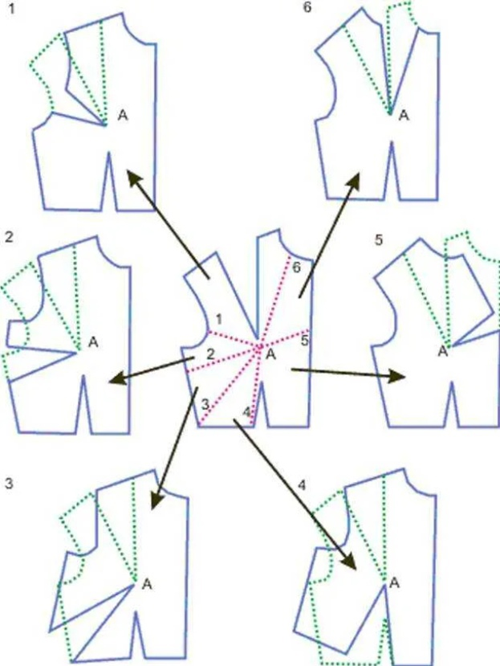
Рис.1
Существует несколько вариантов оформления вытачек:
1 вариант - с несимметричным оформлением вытачки. Такая вытачка делается разрезной (рис.2);
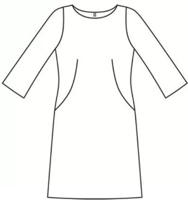
Рис.2
2 вариант – симметричное оформление вытачки прямыми линиями (рис.3);
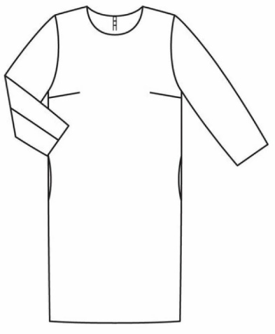
Рис.3
3 вариант - симметричное оформление вытачки с обрисовкой контура выпуклости. В изделиях полуприлегающего и приталенного силуэта нагрудную вытачку часто подключают к вытачке на талии переходящей в подрез кармана (рис.4).
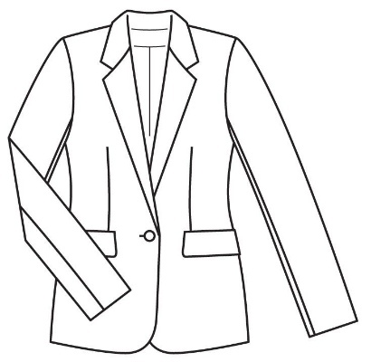
Рис.4
Плечевая вытачка по спинке обычно сохраняется, если изделие имеет прилегание в области лопаток. Если модель имеет кокетку или рельефы, то вытачка переводится в срез кокетки (рельефа). При необходимости можно заложить раствор вытачки в посадку по линии плеча, горловины, проймы (рис.5).
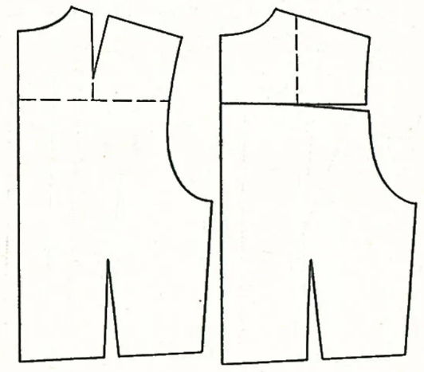
Рис.5
Построение рельефных линий на деталях плечевых изделий
Рельефы в женской плечевой одежде могут начинаться от линий горловины, плеча, проймы и проходить через наиболее выступающие точки груди и лопаток или смещаться в ту или иную сторону (рис 6).
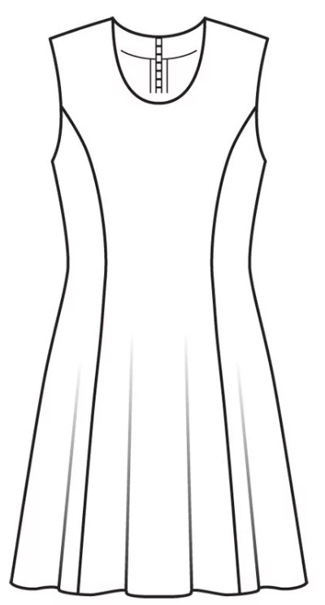
Рис.6
Этапы построения рельефов:
- Определяют положение и конфигурацию линий рельефа в соответствии с эскизом модели (фото или образцом).
- Для получения наиболее выпуклой формы в области груди и лопаток членение должно проходить через экстремальные точки. Если членение проходит в непосредственной близости от выпуклости, то проектируется дополнительная вытачка, выходящая из рельефа (рис.7).
- Шаблон детали разрезают по намеченной линии.
- Исходную вытачку закрывают и скрепляют с помощью скотча, четко совмещая ее стороны.
Плечевую вытачку спинки, перемещаемую в рельеф, удлиняют, сохраняя при оформлении линии рельефа ширину спинки в области лопаток (рис.8).
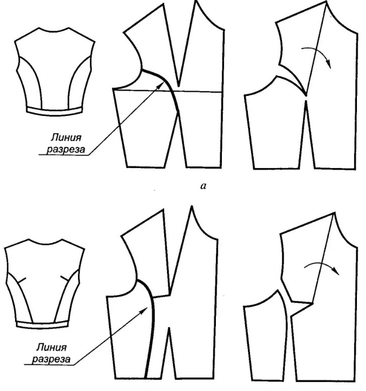
Рис.7
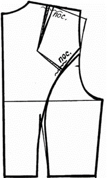
Рис.8
Построение кокеток на деталях плечевых изделий
Этапы построения кокеток:
- На шаблоне детали намечают расположение кокетки по модели проектируемого изделия.
- Шаблон разрезают по намеченной линии.
- Исходную вытачку закрывают и скрепляют с помощью скотча, четко совмещая ее стороны (рис.9).
- Если линия кокетки расположена выше конца вытачки, тогда закрывают только верхнюю часть вытачки, используя оставшуюся часть для сборок, мягких складок, рельефов (рис.10).
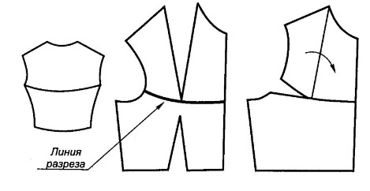
Рис.9
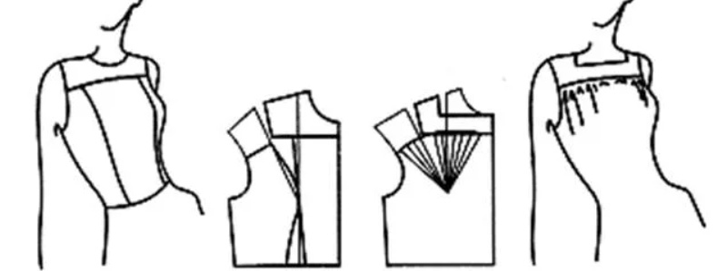
Рис.10
При проектировании изделий с рельефами, необходимо на лекала наносить контрольные надсечки в области экстремальной точки на обеих деталях (например, бочок и средняя часть спинки) для совмещения.
При проектировании изделий с кокеткой, необходимо на лекала наносить контрольные надсечки на обеих деталях (например, кокетка и нижняя часть переда) для совмещения на одинаковом расстоянии от края (проймы, горловины).
Моделирование формы деталей плечевого изделия при создании драпировок
Драпировка — процесс формирования складок, сборок для создания дополнительного объема в определенных местах одежды (рис.11).
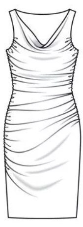
Рис.11
При проектировании драпировок сначала выполняются все предварительные преобразования. Вытачки деталей базовой конструкции переводят максимально в модельные линии членения. Оформление срезов деталей при проектировании драпировок показано на рис.12.
Количество фалд зависит от того, на какое расстояние были разведены линии членения. Еще они увеличивается при расположении нити основы под углом 45 градусов (косой крой).
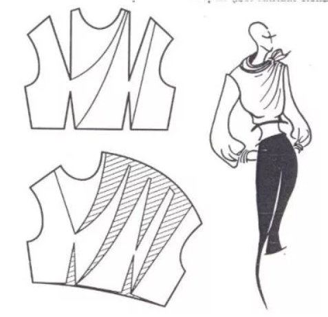
Рис.12
При проектировании изделий с драпировкой, необходимо на лекала наносить контрольные надсечки, которые определяют глубину складок.
Параллельное расширение деталей
Существуют два основных способа изменения силуэтной формы базовой конструкции:
- параллельное, коническое и параллельно-коническое расширение деталей изделия;
- изменение степени прилегания изделия по линиям талии, бёдер и ширины по линии низа. Параллельное и коническое расширение или заужение деталей изделия может выполняться на различных конструктивных уровнях. Расширение деталей может быть равномерным по всему периметру изделия и неравномерным в зависимости от проектируемой формы модели.
Параллельное расширение используют в основном для образования сборок и складок на различных деталях (рис. 13). Для этого на преобразуемую деталь наносят необходимые вертикальные (или горизонтальные) линии; рассекают деталь по нанесенным линиям на полосы; раздвигают полосы на необходимую величину с образованием припуска на сборку или складку (рис.13, 14). В результате длина противоположных срезов увеличивается равномерно.
Если в модели предусмотрено образование напуска на каком-либо уровне, то необходимо изменить размеры детали не только в поперечном, но и продольном направлении на величину напуска (рис.13).
При проектировании складок и сборок необходимо ставить контрольные надсечки для обозначения глубины складок (или равномерного распределения сборки).
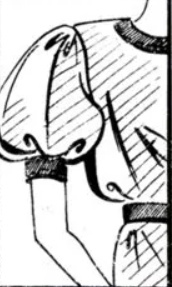
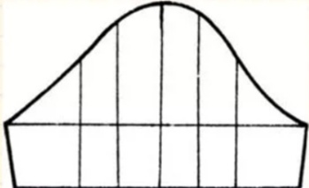
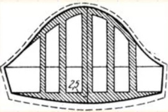
Рис.13
Коническое расширение деталей
Коническое расширение деталей может начинаться на любом уровне: линии плеча, груди, талии и т.д.. Приемы преобразования аналогичны применяемым при параллельном расширении, однако раздвижение деталей производится не вдоль горизонтали, а по дуге. Коническое расширение— это разведение полос на определенный угол без изменения длины среза (рис. 15), а параллельно-коническое — с увеличением длины (рис.16).
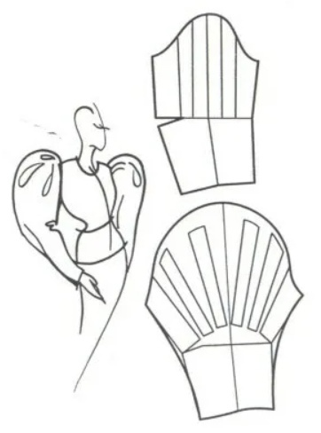
Рис.15
Рис.16
При коническом или параллельном расширении деталей, имеющих вытачку, деталь рассекают для расширения через концы вытачек. После разведения полос вытачки частично или полностью закрываются. Для того чтобы швы соединения полученных деталей в изделии не перекашивались, линии швов должны иметь одинаковый наклон (рис.17).
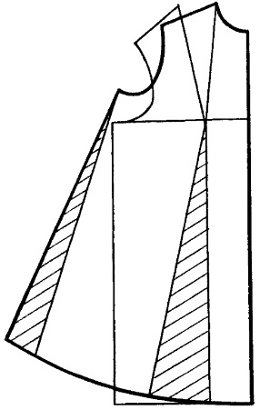
Рис.17
Такие же приемы используются для конического заужения деталей. При этом полосы рассеченных деталей поворачиваются, накладываясь друг на друга.
При заужении деталей книзу и сохранении их ширины на заданном уровне увеличиваются растворы исходных вытачек и образуются новые. Обычно они используются для образования мягких складок и драпировок (рис.18).
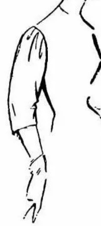
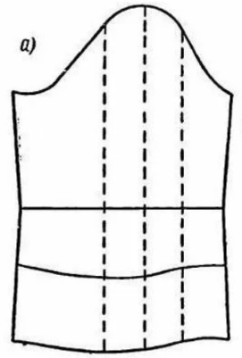
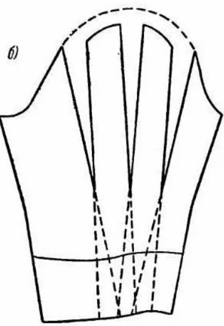
Рис.18
Проектирование складок и подрезов
Для проектирования мягких сборок или складок на деталях изделия используется параллельное расширение.
Иногда мягкие складки или защипы образуются из нестаченных вытачек. При проектировании складок по всей длине на детали намечается место расположения складки, деталь разрезается и раздвигается на требуемое расстояние (рис. 19).
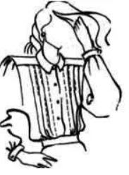
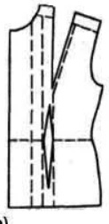
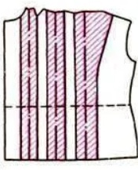
Рис.19
Линии подреза в изделиях проходят под или над выпуклыми контурами фигуры, не доходя до концов вытачек. После нанесения линии подреза на лекало, эту деталь рассекают по линии подреза. На одной части детали вытачку закрывают, а вторую оформляют в виде сборок или защипов, направленных на выпуклость. Если раствор открывшейся вытачки оказывается недостаточным, его дополнительно увеличивают коническим расширением. Окончательные контуры оформляются плавными кривыми линиями (рис.20).
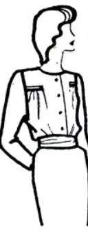
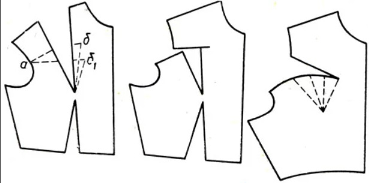
Рис.20
Практическое занятие
1 Для выполнения практического задания вам понадобятся: базовая конструкция женской плечевой одежды, ножницы, малярный скотч (обычный скотч или клей), линейка, ножницы. 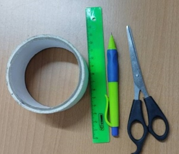
2 Общий алгоритм выполнения конструктивного моделирования:
- намечаем на рабочем шаблоне детали новое расположение нагрудной вытачки (подреза, рельефа, сборки, кокетки или драпировки);
- рассекаем деталь по намеченной линии;
- закрываем первоначальную вытачку;
- если проектируется сборка или драпировка, то для большего объема можно развести детали дополнительно.
3 Пример переноса нагрудной вытачки в подрез.
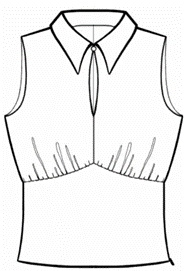
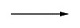
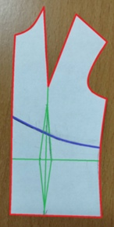
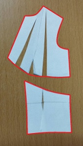
4 Пример переноса нагрудной вытачки в рельеф, формируя драпировку.
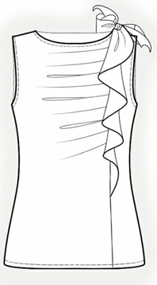
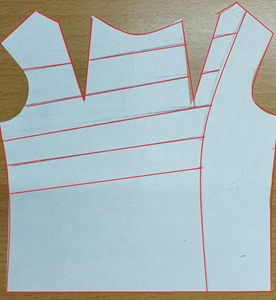
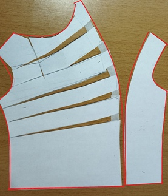
5 Пример переноса нагрудной вытачки в боковой шов.
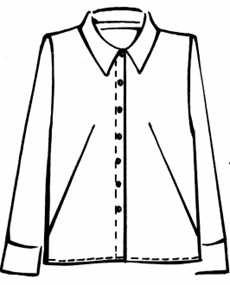
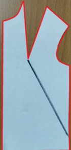
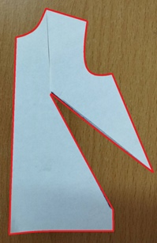
6 Пример переноса нагрудной вытачки в рельеф.
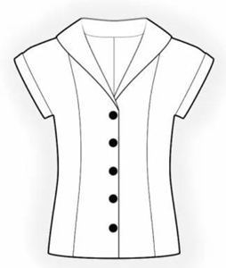
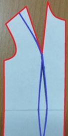
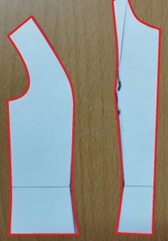
7 Пример переноса нагрудной вытачки в кокетку и сборку.
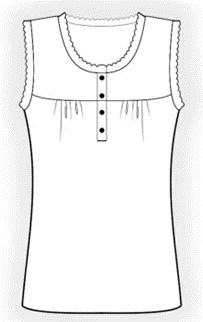
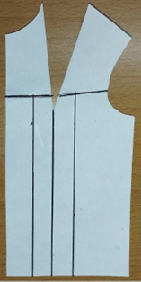
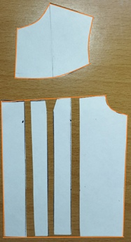
Выполните дополнительные задания с помощью виртуального тренажера для закрепления изученного материала по теме «Перевод вытачек, построение конструктивных линий в изделиях плечевой одежды».